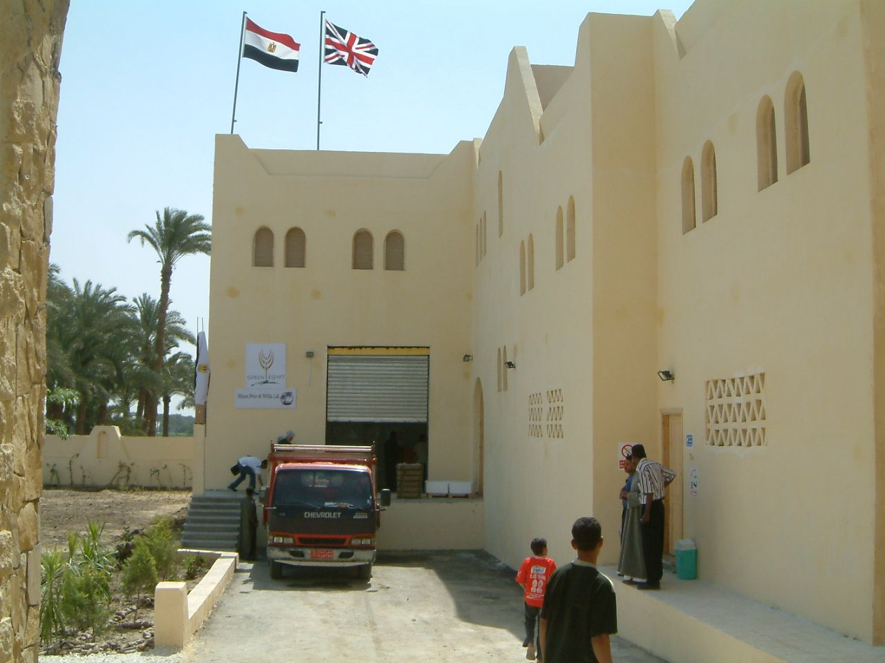

Green Egypt Packhouse
Industrial project · Giza, Egypt
Packing house for agricultural produce in Giza, Egypt, part of PUD's industrial portfolio.
Partners
PUD
Client
More from Giza
 Pyramids Plateau Destination Master PlanGiza · 2024-2025
Pyramids Plateau Destination Master PlanGiza · 2024-2025 Cairo Media CityGiza · 2026
Cairo Media CityGiza · 2026 Urban Renewal of the Faculty of Agriculture, Cairo UniversityGiza (Cairo University) · 2010
Urban Renewal of the Faculty of Agriculture, Cairo UniversityGiza (Cairo University) · 2010 Fragrance Factory (Greiss), 6th of October City6th of October City2008Jewellery Factory and Headquarters, 6th of October City6th of October City · 20082007Pastry Factory, Obour CityObour City · 2007
Fragrance Factory (Greiss), 6th of October City6th of October City2008Jewellery Factory and Headquarters, 6th of October City6th of October City · 20082007Pastry Factory, Obour CityObour City · 2007